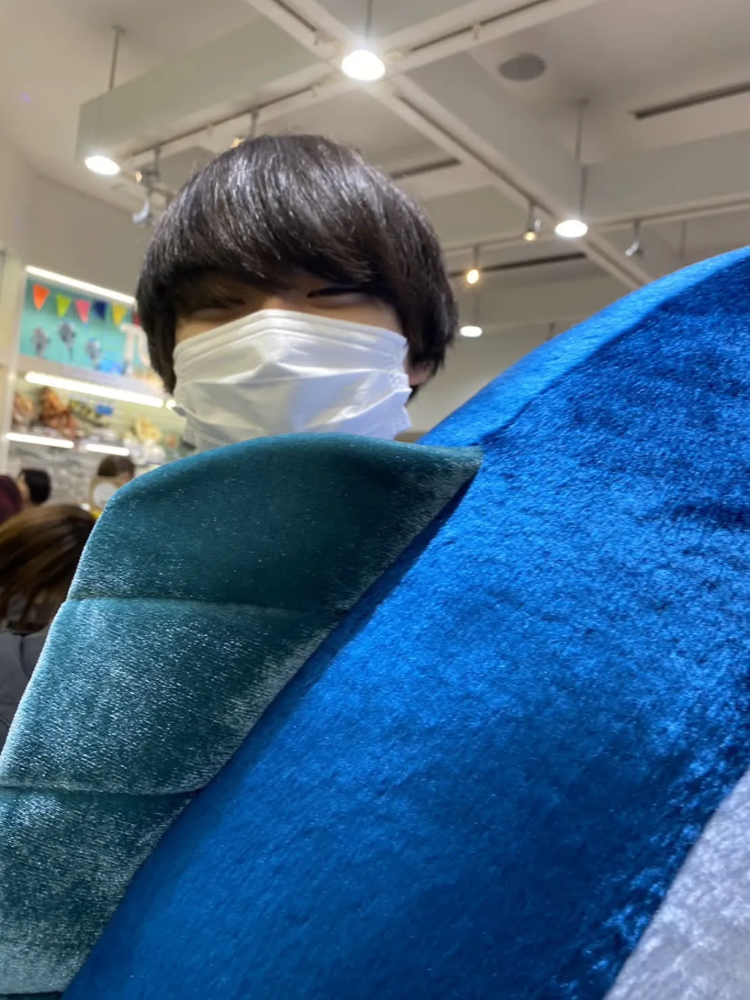
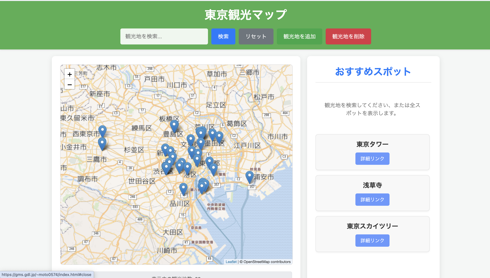
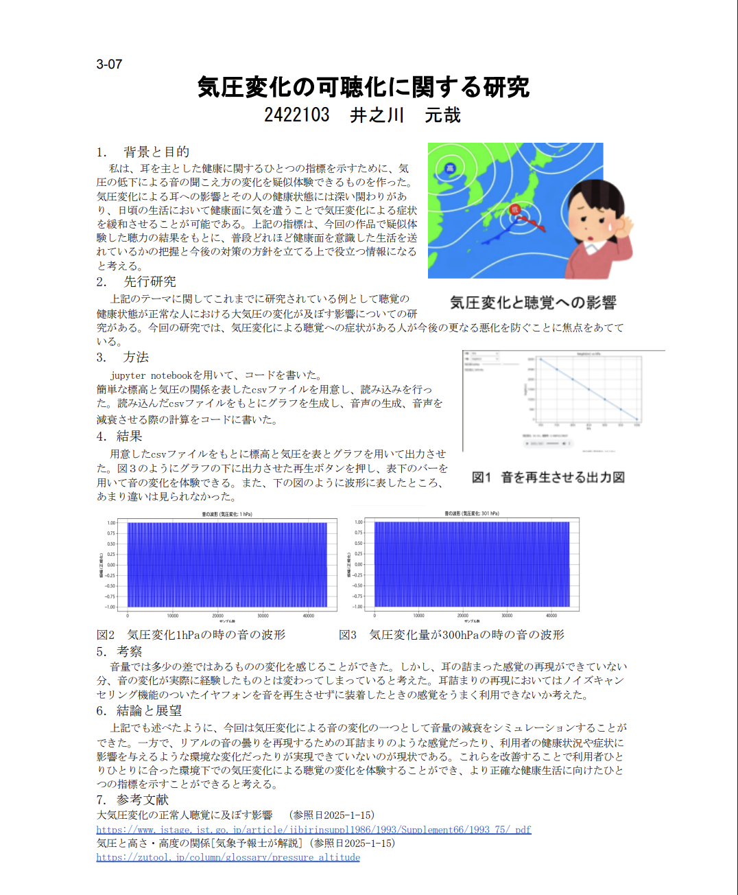
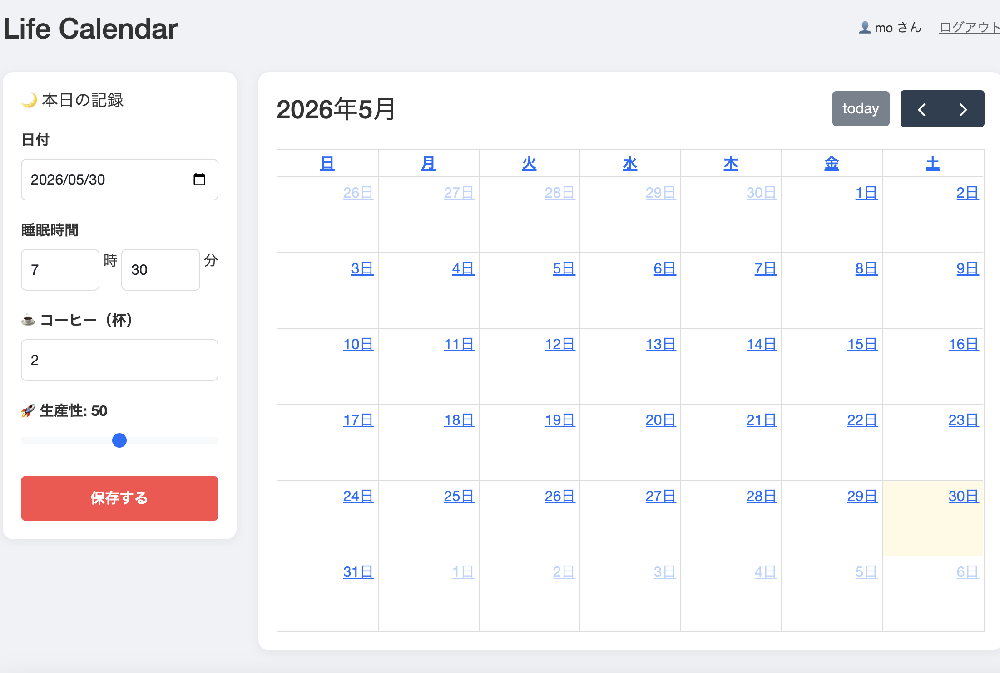
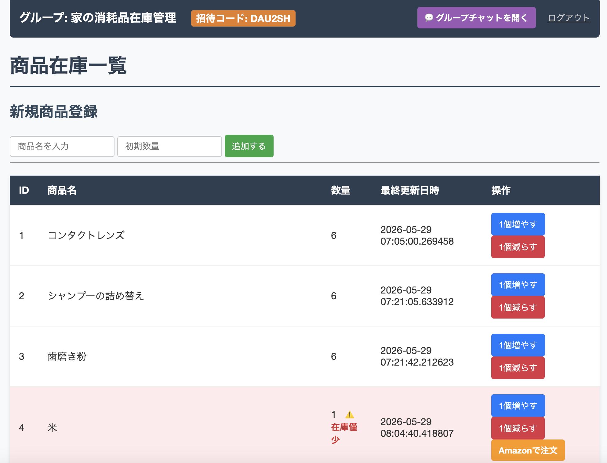
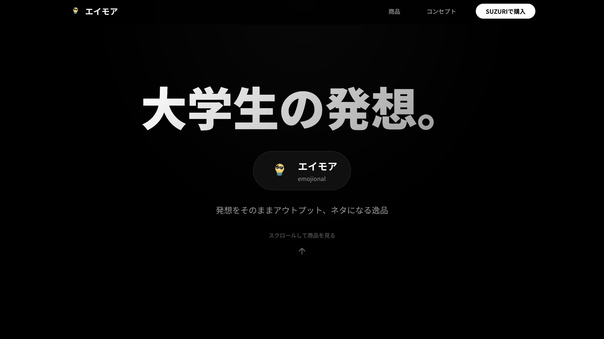

Portfolio
Motoya Inokawa's Project Showcase
About Me

井之川 元哉 (Motoya Inokawa)
武蔵野大学 データサイエンス学部 3年（石橋ゼミ所属）「日々の生活のプラスαになる」をテーマに、Webアプリケーション開発を中心に活動しています。データサイエンスの知見（データ分析・可視化）とエンジニアリングを組み合わせ、課題解決に繋がるプロダクトの構築に挑戦しています。
Experience
-
2024年 3月東京都立井草高等学校 卒業
-
2024年 4月武蔵野大学 データサイエンス学部 データサイエンス学科 入学
-
2025年docomo企業イベント「Canvas X」参加
Works

オリジナルマップ
東京におけるおすすめスポットを自由に記録し、自分だけのオリジナル観光マップを作ることができます。

気圧変化の可聴化に関する研究
気圧変化による音の聞こえ方にどれほど違いが出るのかを検証

グルメマッチングアプリ
家族や友人と外食に行く際、外食先をメンバー間の食の好き嫌いを考慮した上で決定するアプリです。

life calender
日々の睡眠時間やカフェインの摂取量、1日の充実度を記録し、アプリに学習させることで今後の生活を充実させるためのアドバイスを発信します。

在庫管理アプリ
消耗品の管理を行い、在庫数に応じて補充を促します。

エイモアホームページ
参加した企業イベントの一環でグループメンバーとつくったホームページです。
Skills
🌐 フロントエンド
- HTML / CSS
- JavaScript
🐘 バックエンド
- PHP
- Python
🐬 データベース
- PostgreSQL
- SQLite